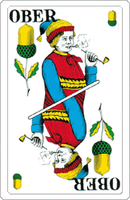

Art. 1 – Name und Sitz
Unter dem Namen Eichel Ober besteht ein Verein im Sinne von Art. 60ff. ZGB mit Sitz in Uster. Er ist politisch unabhängig und konfessionell neutral.

Bitte Passwort eingeben
Verein mit Sitz in Uster
Statuten des Vereins Eichel Ober
Unter dem Namen Eichel Ober besteht ein Verein im Sinne von Art. 60ff. ZGB mit Sitz in Uster. Er ist politisch unabhängig und konfessionell neutral.
Der Verein bezweckt die Huldigung des Eichel Obers, die Pflege der Geselligkeit, die Förderung von Kartenspiel- und Trinkkultur sowie die allgemeine Erheiterung seiner Mitglieder.
Der Verein ist ausschliesslich gemeinnützig tätig und verfolgt keine Erwerbs- oder Selbsthilfezwecke. Die Organe sind ehrenamtlich tätig.
Zur Verfolgung des Vereinszweckes verfügt der Verein über folgende Mittel:
Es werden keine obligatorischen monetären Mitgliederbeiträge erhoben.
Mitglieder können natürliche und juristische Personen werden, denen der Vereinszweck ein Anliegen ist. Sie müssen sich dem Eichel Ober bekennen. Personen, die den Schellen Under bzw. Ober verehren, können nicht Teil des Vereins werden.
Aktivmitglieder mit Stimmrecht sind natürliche Personen, welche die Angebote und Einrichtungen des Vereins nutzen.
Passivmitglieder mit Stimmrecht können natürliche oder juristische Personen sein, welche den Verein ideell und finanziell unterstützen.
Personen, die sich in besonderem Masse für den Verein eingesetzt haben, kann auf Vorschlag des Vorstands durch die Mitgliederversammlung die Ehrenmitgliedschaft verliehen werden. Sie haben kein Stimmrecht.
Der Eintritt in den Verein kann jederzeit erfolgen. Aufnahmegesuche sind an den Vorstand zu richten. Über die Aufnahme entscheidet der Vorstand endgültig.
Die Mitgliedschaft erlischt:
Ein Vereinsaustritt ist jederzeit mit Meldung an den Vorstand möglich. Ein Mitglied kann jederzeit aus folgenden Gründen ausgeschlossen werden:
Der Vorstand fällt den Ausschlussentscheid; das Mitglied kann gegen den Ausschlussentscheid innert 30 Tagen an die nächste Mitgliederversammlung rekurrieren. Bis zum endgültigen Entscheid ruhen die Mitgliederrechte.
Die Organe des Vereins sind:
Das oberste Organ des Vereins ist die Mitgliederversammlung. Eine ordentliche Mitgliederversammlung findet jährlich statt. Zur Mitgliederversammlung werden die Mitglieder mindestens 10 Tage im Voraus schriftlich unter Angabe der Traktanden eingeladen. Einladungen per WhatsApp sind gültig.
Anträge von Mitgliedern für zusätzliche Geschäfte zuhanden der Mitgliederversammlung sind bis spätestens 1 Tag vor der Versammlung schriftlich und begründet dem Vorstand einzureichen. Der Vorstand oder 1/5 der Mitglieder können jederzeit die Einberufung einer ausserordentlichen Mitgliederversammlung verlangen. Die Versammlung hat spätestens 4 Wochen nach Eingang des Begehrens zu erfolgen.
Die Mitgliederversammlung hat folgende unentziehbare Aufgaben und Kompetenzen:
Jede ordnungsgemäss einberufene Mitgliederversammlung ist unabhängig von der Anzahl der anwesenden Mitglieder beschlussfähig. Die Mitglieder fassen die Beschlüsse mit dem einfachen Mehr der abgegebenen Stimmen. Bei Stimmengleichheit fällt die/der Vorsitzende den Stichentscheid. Statutenänderungen benötigen die Zustimmung einer Mehrheit der anwesenden Stimmberechtigten. Schwerwiegende Änderungen müssen vom Eichel Ober abgesegnet werden. Über die gefassten Beschlüsse ist zumindest ein Beschlussprotokoll abzufassen.
Der Vorstand besteht aus mindestens 3 Personen. Die Amtszeit beträgt 1 Jahr, Wiederwahl ist zulässig. Der Vorstand führt die laufenden Geschäfte und vertritt den Verein nach aussen. Er erlässt Reglemente. Er kann für die Erreichung der Vereinsziele Personen gegen eine angemessene Entschädigung anstellen oder beauftragen.
Im Vorstand sind folgende Ressorts vertreten:
Der Vorstand konstituiert sich mit Ausnahme des Präsidiums selber. Der Vorstand versammelt sich, sooft es die Geschäfte verlangen. Sofern kein Vorstandsmitglied mündliche Beratung verlangt, ist die Beschlussfassung auf dem Zirkularweg gültig. Der Vorstand ist grundsätzlich ehrenamtlich und unentgeltlich tätig, er hat Anrecht auf Vergütung der effektiven Spesen.
Der Eichel Ober ist das Oberhaupt des Vereins. Er hat ein Veto-Recht in allen Angelegenheiten. Er wird durch den Vorstand vertreten. Dem Eichel Ober ist Respekt zu zollen.
Der Eichel Ober kann in diversen Kartenspielen eine besondere Rolle erhalten. Die Mitglieder bestimmen über deren konkrete Gestaltung. Der Eichel Ober ist für eine starke Spielkarte prädestiniert. Anrufe des Eichel Ober sind stets entgegenzunehmen.
Der Verein wird verpflichtet durch die Kollektivunterschrift des/der Präsident/in zusammen mit einem weiteren Mitglied des Vorstandes.
Der Verein erhebt von den Mitgliedern ausschliesslich diejenigen Personendaten, die zur Erfüllung des Vereinszwecks notwendig sind. Der Vorstand sorgt für eine dem Risiko angemessene Sicherheit der Daten. Die Mitgliederdaten werden den anderen Mitgliedern nicht bekanntgegeben, es sei denn, eine gesetzliche Bestimmung sehe dies vor. Im Übrigen erfolgt eine Bekanntgabe der Daten an Dritte nur im Rahmen einer gesetzlich zulässigen Auftragsbearbeitung. Die Bearbeitung der Mitgliederdaten erfolgt nach den Bestimmungen der schweizerischen Datenschutzgesetzgebung und der Datenschutzerklärung auf der Website des Vereins.
Die Auflösung des Vereins kann durch Beschluss einer ordentlichen oder ausserordentlichen Mitgliederversammlung erfolgen, wenn mindestens 1/2 der Mitglieder daran teilnehmen. Nehmen weniger als 1/2 aller Mitglieder an der Versammlung teil, ist innerhalb eines Monats eine zweite Versammlung abzuhalten. An dieser Versammlung kann der Verein auch dann mit einfacher Mehrheit aufgelöst werden, wenn weniger Mitglieder anwesend sind.
Bei einer Auflösung des Vereins fällt das Vereinsvermögen an eine steuerbefreite Organisation in der Schweiz, welche den gleichen oder einen ähnlichen Zweck verfolgt. Die Verteilung des Vereinsvermögens unter den Mitgliedern ist ausgeschlossen.
Diese Statuten wurden an der Gründungsversammlung vom __________________ angenommen und sind mit diesem Datum in Kraft getreten.
Datum, Ort: __________________________
Protokoll der Gründungsversammlung des Vereins Eichel Ober mit Sitz in Uster
__________________________
__________________________
__________________________
Folgende Personen werden gewählt:
Die Versammlung beschliesst, unter dem Namen Eichel Ober einen Verein gemäss Art. 60ff. des Schweizerischen Zivilgesetzbuches mit Sitz in Uster zu gründen.
Die Versammlung genehmigt den vorliegenden Statutenentwurf und legt ihn als gültige Statuten des Vereins fest.
Als Mitglieder des Vorstandes werden gewählt:
Alle Gewählten erklären Annahme der Wahl. Gemäss Art. 8 der Vereinsstatuten wird das Präsidium durch die Mitgliederversammlung bestimmt. Entsprechend wählt die Versammlung als Präsident/in:
__________________________
Im Übrigen konstituiert sich der Vorstand gemäss Art. 9 der Vereinsstatuten selber und bestimmt einen/eine Co-Präsident/in und einen/eine Aktuar/in.
Ort, Datum: __________________________